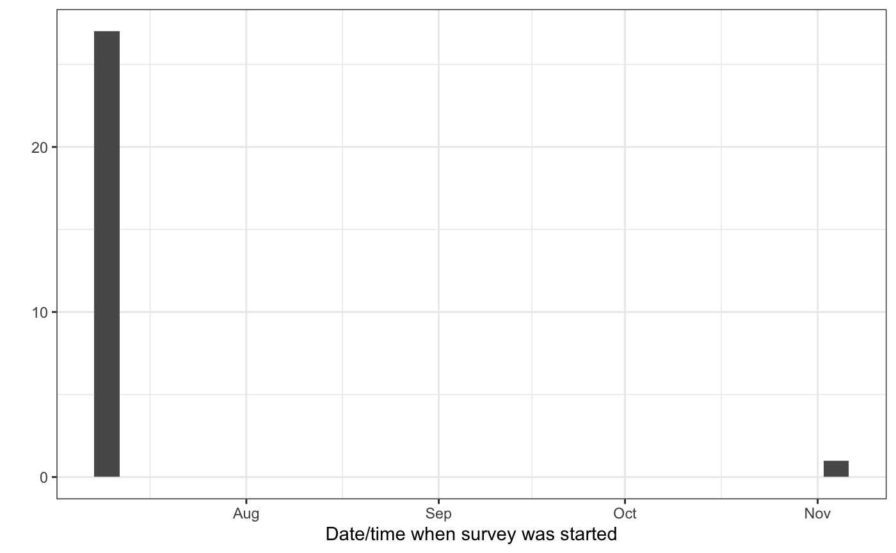
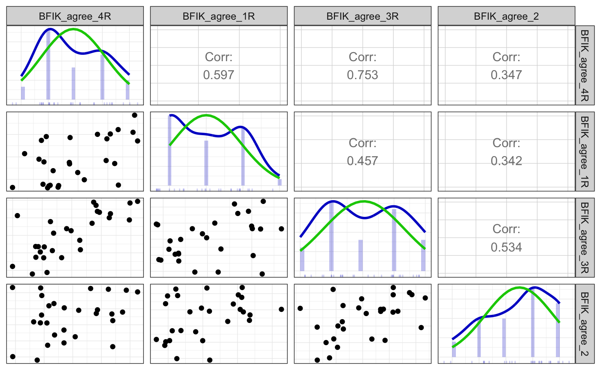
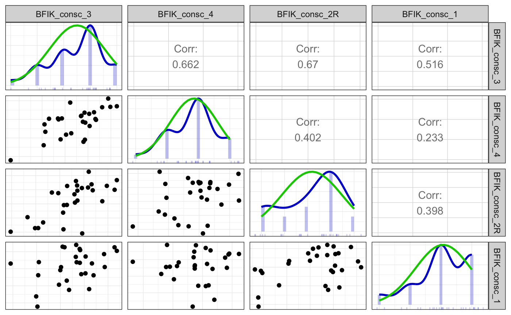
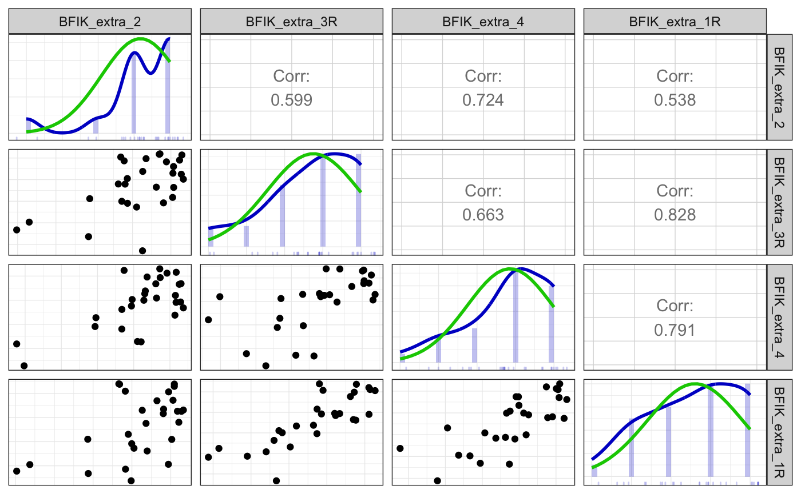
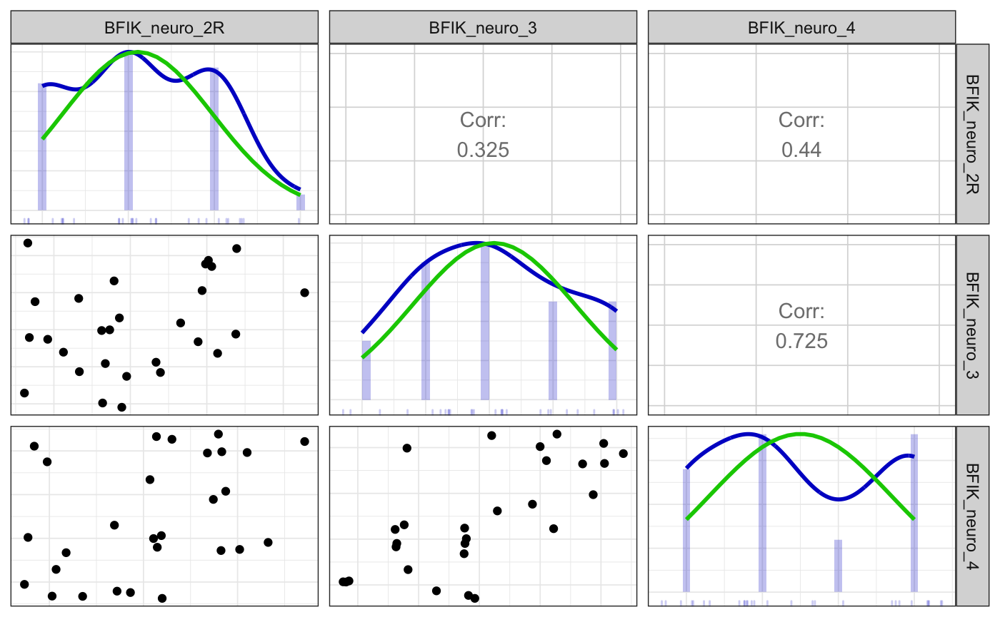

Codebook example with formr.org data
Ruben Arslan
2019-12-29
Source:vignettes/codebook.Rmd
codebook.RmdIn this vignette, you can see what a codebook generated from a dataset with rich metadata looks like. This dataset includes mock data for a short German Big Five personality inventory and an age variable. The dataset follows the format created when importing data from formr.org. However, data imported using the haven package uses similar metadata. You can also add such metadata yourself, or use the codebook package for unannotated datasets.
As you can see below, the codebook package automatically computes reliabilities for multi-item inventories, generates nicely labelled plots and outputs summary statistics. The same information is also stored in a table, which you can export to various formats. Additionally, codebook can show you different kinds of (labelled) missing values, and show you common missingness patterns. As you cannot see, but search engines will, the codebook package also generates JSON-LD metadata for the dataset. If you share your codebook as an HTML file online, this metadata should make it easier for others to find your data. See what Google sees here.
knit_by_pkgdown <- !is.null(knitr::opts_chunk$get("fig.retina"))
knitr::opts_chunk$set(warning = TRUE, message = TRUE, error = FALSE)
pander::panderOptions("table.split.table", Inf)
ggplot2::theme_set(ggplot2::theme_bw())
library(codebook)
data("bfi", package = 'codebook')
if (!knit_by_pkgdown) {
library(dplyr)
bfi <- bfi %>% select(-starts_with("BFIK_extra"),
-starts_with("BFIK_open"),
-starts_with("BFIK_consc"))
}
set.seed(1)
bfi$age <- rpois(nrow(bfi), 30)
library(labelled)
var_label(bfi$age) <- "Alter"By default, we only set the required metadata attributes name and description to sensible values. However, there is a number of attributes you can set to describe the data better. Find out more.
metadata(bfi)$name <- "MOCK Big Five Inventory dataset (German metadata demo)"
metadata(bfi)$description <- "a small mock Big Five Inventory dataset"
metadata(bfi)$identifier <- "doi:10.5281/zenodo.1326520"
metadata(bfi)$datePublished <- "2016-06-01"
metadata(bfi)$creator <- list(
"@type" = "Person",
givenName = "Ruben", familyName = "Arslan",
email = "ruben.arslan@gmail.com",
affiliation = list("@type" = "Organization",
name = "MPI Human Development, Berlin"))
metadata(bfi)$citation <- "Arslan (2016). Mock BFI data."
metadata(bfi)$url <- "https://rubenarslan.github.io/codebook/articles/codebook.html"
metadata(bfi)$temporalCoverage <- "2016"
metadata(bfi)$spatialCoverage <- "Goettingen, Germany" # We don't want to look at the code in the codebook.
knitr::opts_chunk$set(warning = TRUE, message = TRUE, echo = FALSE)## Warning in doTryCatch(return(expr), name, parentenv, handler): Reliability CIs
## could not be computed for BFIK_open## Warning in doTryCatch(return(expr), name, parentenv, handler): missing value
## where TRUE/FALSE needed## Warning in value[[3L]](cond): Reliability could not be computed for BFIK_open## Warning in value[[3L]](cond): missing value where TRUE/FALSE neededMetadata
Description
Dataset name: MOCK Big Five Inventory dataset (German metadata demo)
a small mock Big Five Inventory dataset
Metadata for search engines
- Temporal Coverage: 2016
- Spatial Coverage: Goettingen, Germany
- Citation: Arslan (2016). Mock BFI data.
- URL: https://rubenarslan.github.io/codebook/articles/codebook.html
- Identifier: doi:10.5281/zenodo.1326520
Date published: 2016-06-01
-
Creator:
- @type: Person
- givenName: Ruben
- familyName: Arslan
- email: ruben.arslan@gmail.com
-
affiliation:
- @type: Organization
- name: MPI Human Development, Berlin
- keywords: session, created, modified, ended, expired, BFIK_open_2, BFIK_agree_4R, BFIK_extra_2, BFIK_agree_1R, BFIK_open_1, BFIK_neuro_2R, BFIK_consc_3, BFIK_consc_4, BFIK_consc_2R, BFIK_agree_3R, BFIK_extra_3R, BFIK_neuro_3, BFIK_neuro_4, BFIK_agree_2, BFIK_consc_1, BFIK_open_4, BFIK_extra_4, BFIK_extra_1R, BFIK_open_3, BFIK_agree, BFIK_open, BFIK_consc, BFIK_extra, BFIK_neuro and age
Survey overview
28 completed rows, 28 who entered any information, 0 only viewed the first page. There are 0 expired rows (people who did not finish filling out in the requested time frame). In total, there are 28 rows including unfinished and expired rows.
There were 28 unique participants, of which 28 finished filling out at least one survey.
This survey was not repeated.
The first session started on 2016-07-08 09:54:16, the last session on 2016-11-02 21:19:50.
## `stat_bin()` using `bins = 30`. Pick better value with `binwidth`.
People took on average 127.36 minutes (median 1.48) to answer the survey.
## Warning: Durations below 0 detected.## Warning: Removed 4 rows containing non-finite values (stat_bin).## Warning: Removed 2 rows containing missing values (geom_bar).Variables
Scale: BFIK_agree


Reliability details
Reliability Indices
| Index | Estimate |
|---|---|
| Omega | 0.8193 |
| Omega Psych Tot | 0.8878 |
| Omega Psych H | 0.7664 |
| Omega Ordinal | 0.605 |
| Cronbach Alpha | 0.8006 |
| Greatest Lower Bound | 0.8858 |
| Alpha Ordinal | 0.5879 |
Positive correlations: 6 out of 6 (100%)
Scatter matrix

Detailed output
##
## Information about this analysis:
##
## Dataframe: res$dat
## Items: BFIK_agree_4R, BFIK_agree_1R, BFIK_agree_3R, BFIK_agree_2
## Observations: 28
## Positive correlations: 6 out of 6 (100%)
##
## Estimates assuming interval level:
##
## Omega (total): 0.82
## Omega (hierarchical): 0.77
## Revelle's omega (total): 0.89
## Greatest Lower Bound (GLB): 0.89
## Coefficient H: 0.88
## Cronbach's alpha: 0.8
## Confidence intervals:
## Omega (total): [0.71, 0.93]
## Cronbach's alpha: [0.68, 0.92]
##
## Estimates assuming ordinal level:
##
## Ordinal Omega (total): 0.61
## Ordinal Omega (hierarch.): 0.59
## Ordinal Cronbach's alpha: 0.59
## Confidence intervals:
## Ordinal Omega (total): [0.37, 0.84]
## Ordinal Cronbach's alpha: [0.33, 0.84]
##
## Note: the normal point estimate and confidence interval for omega are based on the procedure suggested by Dunn, Baguley & Brunsden (2013) using the MBESS function ci.reliability, whereas the psych package point estimate was suggested in Revelle & Zinbarg (2008). See the help ('?scaleStructure') for more information.
##
## Eigen values: 2.539, 0.732, 0.54, 0.189
## Loadings:
## PC1
## BFIK_agree_4R 0.871
## BFIK_agree_1R 0.748
## BFIK_agree_3R 0.880
## BFIK_agree_2 0.668
##
## PC1
## SS loadings 2.539
## Proportion Var 0.635
##
## vars n mean sd median trimmed mad min max range skew
## BFIK_agree_4R 1 28 2.93 1.18 3 2.92 1.48 1 5 4 0.26
## BFIK_agree_1R 2 28 3.00 0.94 3 2.96 1.48 2 5 3 0.26
## BFIK_agree_3R 3 28 3.04 1.29 3 3.04 1.48 1 5 4 0.04
## BFIK_agree_2 4 28 3.50 1.26 4 3.58 1.48 1 5 4 -0.43
## kurtosis se
## BFIK_agree_4R -1.18 0.22
## BFIK_agree_1R -1.37 0.18
## BFIK_agree_3R -1.35 0.24
## BFIK_agree_2 -1.03 0.24Summary statistics
| name | label | type | type_options | data_type | value_labels | optional | item_order | n_missing | complete_rate | min | median | max | mean | sd | n_value_labels | hist |
|---|---|---|---|---|---|---|---|---|---|---|---|---|---|---|---|---|
| BFIK_agree_4R | Ich kann mich schroff und abweisend anderen gegenüber verhalten. | rating_button | 5 | haven_labelled | 5. 1: Trifft überhaupt nicht zu, 4. 2, 3. 3, 2. 4, 1. 5: Trifft voll und ganz zu, NA. Item was never rendered for this user. |
0 | 5 | 0 | 1 | 1 | 3 | 5 | 2.928571 | 1.184110 | 6 | ▂▇▁▃▁▅▁▂ |
| BFIK_agree_1R | Ich neige dazu, andere zu kritisieren. | rating_button | 5 | haven_labelled | 5. 1: Trifft überhaupt nicht zu, 4. 2, 3. 3, 2. 4, 1. 5: Trifft voll und ganz zu, NA. Item was never rendered for this user. |
0 | 7 | 0 | 1 | 2 | 3 | 5 | 3.000000 | 0.942809 | 6 | ▇▁▅▁▁▆▁▁ |
| BFIK_agree_3R | Ich kann mich kalt und distanziert verhalten. | rating_button | 5 | haven_labelled | 5. 1: Trifft überhaupt nicht zu, 4. 2, 3. 3, 2. 4, 1. 5: Trifft voll und ganz zu, NA. Item was never rendered for this user. |
0 | 13 | 0 | 1 | 1 | 3 | 5 | 3.035714 | 1.290482 | 6 | ▂▇▁▃▁▇▁▃ |
| BFIK_agree_2 | Ich schenke anderen leicht Vertrauen, glaube an das Gute im Menschen. | rating_button | 5 | haven_labelled | 1. 1: Trifft überhaupt nicht zu, 2. 2, 3. 3, 4. 4, 5. 5: Trifft voll und ganz zu, NA. Item was never rendered for this user. |
0 | 17 | 0 | 1 | 1 | 4 | 5 | 3.500000 | 1.261980 | 6 | ▂▅▁▅▁▇▁▆ |
Scale: BFIK_open

Summary statistics
| name | label | type | type_options | data_type | value_labels | optional | item_order | n_missing | complete_rate | min | median | max | mean | sd | n_value_labels | hist |
|---|---|---|---|---|---|---|---|---|---|---|---|---|---|---|---|---|
| BFIK_open_2 | Ich bin tiefsinnig, denke gerne über Sachen nach. | rating_button | 5 | haven_labelled | 1. 1: Trifft überhaupt nicht zu, 2. 2, 3. 3, 4. 4, 5. 5: Trifft voll und ganz zu, NA. Item was never rendered for this user. |
0 | 4 | 0 | 1 | 2 | 4.0 | 5 | 4.214286 | 0.7382232 | 6 | ▁▁▁▁▁▇▁▅ |
| BFIK_open_1 | Ich bin vielseitig interessiert. | rating_button | 5 | haven_labelled | 1. 1: Trifft überhaupt nicht zu, 2. 2, 3. 3, 4. 4, 5. 5: Trifft voll und ganz zu, NA. Item was never rendered for this user. |
0 | 8 | 0 | 1 | 2 | 5.0 | 5 | 4.392857 | 0.8317445 | 6 | ▁▁▂▁▁▃▁▇ |
| BFIK_open_4 | Ich schätze künstlerische und ästhetische Eindrücke. | rating_button | 5 | haven_labelled | 1. 1: Trifft überhaupt nicht zu, 2. 2, 3. 3, 4. 4, 5. 5: Trifft voll und ganz zu, NA. Item was never rendered for this user. |
0 | 19 | 0 | 1 | 1 | 4.0 | 5 | 4.214286 | 0.9567361 | 6 | ▁▁▁▂▁▆▁▇ |
| BFIK_open_3 | Ich habe eine aktive Vorstellungskraft, bin phantasievoll. | rating_button | 5 | haven_labelled | 1. 1: Trifft überhaupt nicht zu, 2. 2, 3. 3, 4. 4, 5. 5: Trifft voll und ganz zu, NA. Item was never rendered for this user. |
0 | 22 | 0 | 1 | 2 | 4.5 | 5 | 4.214286 | 0.9567361 | 6 | ▁▁▂▁▁▅▁▇ |
Scale: BFIK_consc
Reliability details
Reliability Indices
| Index | Estimate |
|---|---|
| Omega | 0.812 |
| Omega Psych Tot | 0.3688 |
| Omega Psych H | 0.2444 |
| Omega Ordinal | 0.6077 |
| Cronbach Alpha | 0.7797 |
| Greatest Lower Bound | 0.9018 |
| Alpha Ordinal | 0.5935 |
Positive correlations: 6 out of 6 (100%)
Scatter matrix

Detailed output
##
## Information about this analysis:
##
## Dataframe: res$dat
## Items: BFIK_consc_3, BFIK_consc_4, BFIK_consc_2R, BFIK_consc_1
## Observations: 28
## Positive correlations: 6 out of 6 (100%)
##
## Estimates assuming interval level:
##
## Omega (total): 0.81
## Omega (hierarchical): 0.24
## Revelle's omega (total): 0.37
## Greatest Lower Bound (GLB): 0.9
## Coefficient H: 1
## Cronbach's alpha: 0.78
## Confidence intervals:
## Omega (total): [0.7, 0.92]
## Cronbach's alpha: [0.65, 0.91]
##
## Estimates assuming ordinal level:
##
## Ordinal Omega (total): 0.61
## Ordinal Omega (hierarch.): 0.59
## Ordinal Cronbach's alpha: 0.59
## Confidence intervals:
## Ordinal Omega (total): [0.38, 0.84]
## Ordinal Cronbach's alpha: [0.34, 0.84]
##
## Note: the normal point estimate and confidence interval for omega are based on the procedure suggested by Dunn, Baguley & Brunsden (2013) using the MBESS function ci.reliability, whereas the psych package point estimate was suggested in Revelle & Zinbarg (2008). See the help ('?scaleStructure') for more information.
##
## Eigen values: 2.473, 0.777, 0.539, 0.211
## Loadings:
## PC1
## BFIK_consc_3 0.926
## BFIK_consc_4 0.738
## BFIK_consc_2R 0.800
## BFIK_consc_1 0.657
##
## PC1
## SS loadings 2.473
## Proportion Var 0.618
##
## vars n mean sd median trimmed mad min max range skew
## BFIK_consc_3 1 28 3.50 1.04 4 3.54 1.48 1 5 4 -0.48
## BFIK_consc_4 2 28 3.86 0.76 4 3.88 0.00 2 5 3 -0.27
## BFIK_consc_2R 3 28 3.18 1.31 4 3.21 1.48 1 5 4 -0.51
## BFIK_consc_1 4 28 4.07 0.90 4 4.17 1.48 2 5 3 -0.72
## kurtosis se
## BFIK_consc_3 -0.50 0.20
## BFIK_consc_4 -0.35 0.14
## BFIK_consc_2R -1.08 0.25
## BFIK_consc_1 -0.30 0.17Summary statistics
| name | label | type | type_options | data_type | value_labels | optional | item_order | n_missing | complete_rate | min | median | max | mean | sd | n_value_labels | hist |
|---|---|---|---|---|---|---|---|---|---|---|---|---|---|---|---|---|
| BFIK_consc_3 | Ich bin tüchtig und arbeite flott. | rating_button | 5 | haven_labelled | 1. 1: Trifft überhaupt nicht zu, 2. 2, 3. 3, 4. 4, 5. 5: Trifft voll und ganz zu, NA. Item was never rendered for this user. |
0 | 10 | 0 | 1 | 1 | 4 | 5 | 3.500000 | 1.0363755 | 6 | ▁▂▁▅▁▇▁▂ |
| BFIK_consc_4 | Ich mache Pläne und führe sie auch durch. | rating_button | 5 | haven_labelled | 1. 1: Trifft überhaupt nicht zu, 2. 2, 3. 3, 4. 4, 5. 5: Trifft voll und ganz zu, NA. Item was never rendered for this user. |
0 | 11 | 0 | 1 | 2 | 4 | 5 | 3.857143 | 0.7559289 | 6 | ▁▁▃▁▁▇▁▂ |
| BFIK_consc_2R | Ich bin bequem, neige zur Faulheit. | rating_button | 5 | haven_labelled | 5. 1: Trifft überhaupt nicht zu, 4. 2, 3. 3, 2. 4, 1. 5: Trifft voll und ganz zu, NA. Item was never rendered for this user. |
0 | 12 | 0 | 1 | 1 | 4 | 5 | 3.178571 | 1.3067792 | 6 | ▃▂▁▃▁▇▁▂ |
| BFIK_consc_1 | Ich erledige Aufgaben gründlich. | rating_button | 5 | haven_labelled | 1. 1: Trifft überhaupt nicht zu, 2. 2, 3. 3, 4. 4, 5. 5: Trifft voll und ganz zu, NA. Item was never rendered for this user. |
0 | 18 | 0 | 1 | 2 | 4 | 5 | 4.071429 | 0.8997354 | 6 | ▁▁▂▁▁▇▁▇ |
Scale: BFIK_extra
Reliability details
Reliability Indices
| Index | Estimate |
|---|---|
| Omega | 0.9023 |
| Omega Psych Tot | 0.9589 |
| Omega Psych H | 0.8395 |
| Omega Ordinal | 0.775 |
| Cronbach Alpha | 0.8993 |
| Greatest Lower Bound | 0.9581 |
| Alpha Ordinal | 0.7744 |
Positive correlations: 6 out of 6 (100%)
Scatter matrix

Detailed output
##
## Information about this analysis:
##
## Dataframe: res$dat
## Items: BFIK_extra_2, BFIK_extra_3R, BFIK_extra_4, BFIK_extra_1R
## Observations: 28
## Positive correlations: 6 out of 6 (100%)
##
## Estimates assuming interval level:
##
## Omega (total): 0.9
## Omega (hierarchical): 0.84
## Revelle's omega (total): 0.96
## Greatest Lower Bound (GLB): 0.96
## Coefficient H: 0.93
## Cronbach's alpha: 0.9
## Confidence intervals:
## Omega (total): [0.84, 0.96]
## Cronbach's alpha: [0.83, 0.96]
##
## Estimates assuming ordinal level:
##
## Ordinal Omega (total): 0.78
## Ordinal Omega (hierarch.): 0.75
## Ordinal Cronbach's alpha: 0.77
## Confidence intervals:
## Ordinal Omega (total): [0.64, 0.91]
## Ordinal Cronbach's alpha: [0.64, 0.91]
##
## Note: the normal point estimate and confidence interval for omega are based on the procedure suggested by Dunn, Baguley & Brunsden (2013) using the MBESS function ci.reliability, whereas the psych package point estimate was suggested in Revelle & Zinbarg (2008). See the help ('?scaleStructure') for more information.
##
## Eigen values: 3.077, 0.527, 0.297, 0.099
## Loadings:
## PC1
## BFIK_extra_2 0.806
## BFIK_extra_3R 0.883
## BFIK_extra_4 0.908
## BFIK_extra_1R 0.907
##
## PC1
## SS loadings 3.077
## Proportion Var 0.769
##
## vars n mean sd median trimmed mad min max range skew
## BFIK_extra_2 1 28 4.18 1.09 4 4.38 1.48 1 5 4 -1.66
## BFIK_extra_3R 2 28 3.75 1.21 4 3.88 1.48 1 5 4 -0.76
## BFIK_extra_4 3 28 3.86 1.11 4 3.96 1.48 1 5 4 -0.82
## BFIK_extra_1R 4 28 3.61 1.20 4 3.67 1.48 1 5 4 -0.37
## kurtosis se
## BFIK_extra_2 2.40 0.21
## BFIK_extra_3R -0.35 0.23
## BFIK_extra_4 -0.21 0.21
## BFIK_extra_1R -1.07 0.23Summary statistics
| name | label | type | type_options | data_type | value_labels | optional | item_order | n_missing | complete_rate | min | median | max | mean | sd | n_value_labels | hist |
|---|---|---|---|---|---|---|---|---|---|---|---|---|---|---|---|---|
| BFIK_extra_2 | Ich bin begeisterungsfähig und kann andere leicht mitreißen. | rating_button | 5 | haven_labelled | 1. 1: Trifft überhaupt nicht zu, 2. 2, 3. 3, 4. 4, 5. 5: Trifft voll und ganz zu, NA. Item was never rendered for this user. |
0 | 6 | 0 | 1 | 1 | 4 | 5 | 4.178571 | 1.090483 | 6 | ▁▁▁▁▁▇▁▇ |
| BFIK_extra_3R | Ich bin eher der “stille Typ”, wortkarg. | rating_button | 5 | haven_labelled | 5. 1: Trifft überhaupt nicht zu, 4. 2, 3. 3, 2. 4, 1. 5: Trifft voll und ganz zu, NA. Item was never rendered for this user. |
0 | 14 | 0 | 1 | 1 | 4 | 5 | 3.750000 | 1.205696 | 6 | ▂▂▁▅▁▇▁▇ |
| BFIK_extra_4 | Ich gehe aus mir heraus, bin gesellig. | rating_button | 5 | haven_labelled | 1. 1: Trifft überhaupt nicht zu, 2. 2, 3. 3, 4. 4, 5. 5: Trifft voll und ganz zu, NA. Item was never rendered for this user. |
0 | 20 | 0 | 1 | 1 | 4 | 5 | 3.857143 | 1.112697 | 6 | ▁▂▁▃▁▇▁▆ |
| BFIK_extra_1R | Ich bin eher zurückhaltend, reserviert. | rating_button | 5 | haven_labelled | 5. 1: Trifft überhaupt nicht zu, 4. 2, 3. 3, 2. 4, 1. 5: Trifft voll und ganz zu, NA. Item was never rendered for this user. |
0 | 21 | 0 | 1 | 1 | 4 | 5 | 3.607143 | 1.196888 | 6 | ▁▅▁▆▁▇▁▇ |
Scale: BFIK_neuro

Reliability details
Reliability Indices
| Index | Estimate |
|---|---|
| Omega | 0.8191 |
| Omega Psych Tot | 0.7954 |
| Omega Psych H | 0.03191 |
| Omega Ordinal | 0.665 |
| Cronbach Alpha | 0.7537 |
| Greatest Lower Bound | 0.8345 |
| Alpha Ordinal | 0.6023 |
Positive correlations: 3 out of 3 (100%)
Scatter matrix

Detailed output
##
## Information about this analysis:
##
## Dataframe: res$dat
## Items: BFIK_neuro_2R, BFIK_neuro_3, BFIK_neuro_4
## Observations: 28
## Positive correlations: 3 out of 3 (100%)
##
## Estimates assuming interval level:
##
## Omega (total): 0.82
## Omega (hierarchical): 0.03
## Revelle's omega (total): 0.8
## Greatest Lower Bound (GLB): 0.83
## Coefficient H: 0.98
## Cronbach's alpha: 0.75
## Confidence intervals:
## Omega (total): [0.71, 0.93]
## Cronbach's alpha: [0.58, 0.92]
##
## Estimates assuming ordinal level:
##
## Ordinal Omega (total): 0.66
## Ordinal Omega (hierarch.): 0.64
## Ordinal Cronbach's alpha: 0.6
## Confidence intervals:
## Ordinal Omega (total): [0.43, 0.9]
## Ordinal Cronbach's alpha: [0.34, 0.86]
##
## Note: the normal point estimate and confidence interval for omega are based on the procedure suggested by Dunn, Baguley & Brunsden (2013) using the MBESS function ci.reliability, whereas the psych package point estimate was suggested in Revelle & Zinbarg (2008). See the help ('?scaleStructure') for more information.
##
## Eigen values: 2.015, 0.723, 0.262
## Loadings:
## PC1
## BFIK_neuro_2R 0.670
## BFIK_neuro_3 0.863
## BFIK_neuro_4 0.907
##
## PC1
## SS loadings 2.015
## Proportion Var 0.672
##
## vars n mean sd median trimmed mad min max range skew kurtosis
## BFIK_neuro_2R 1 28 3.11 0.88 3 3.08 1.48 2 5 3 0.12 -1.14
## BFIK_neuro_3 2 28 3.07 1.27 3 3.08 1.48 1 5 4 0.08 -1.14
## BFIK_neuro_4 3 28 2.50 1.20 2 2.50 1.48 1 4 3 0.12 -1.60
## se
## BFIK_neuro_2R 0.17
## BFIK_neuro_3 0.24
## BFIK_neuro_4 0.23Summary statistics
| name | label | type | type_options | data_type | value_labels | optional | item_order | n_missing | complete_rate | min | median | max | mean | sd | n_value_labels | hist |
|---|---|---|---|---|---|---|---|---|---|---|---|---|---|---|---|---|
| BFIK_neuro_2R | Ich bin entspannt, lasse mich durch Stress nicht aus der Ruhe bringen. | rating_button | 5 | haven_labelled | 5. 1: Trifft überhaupt nicht zu, 4. 2, 3. 3, 2. 4, 1. 5: Trifft voll und ganz zu, NA. Item was never rendered for this user. |
0 | 9 | 0 | 1 | 2 | 3 | 5 | 3.107143 | 0.8751417 | 6 | ▆▁▇▁▁▇▁▁ |
| BFIK_neuro_3 | Ich mache mir viele Sorgen. | rating_button | 5 | haven_labelled | 1. 1: Trifft überhaupt nicht zu, 2. 2, 3. 3, 4. 4, 5. 5: Trifft voll und ganz zu, NA. Item was never rendered for this user. |
0 | 15 | 0 | 1 | 1 | 3 | 5 | 3.071429 | 1.2744954 | 6 | ▃▇▁▇▁▅▁▅ |
| BFIK_neuro_4 | Ich werde leicht nervös und unsicher. | rating_button | 5 | haven_labelled | 1. 1: Trifft überhaupt nicht zu, 2. 2, 3. 3, 4. 4, 5. 5: Trifft voll und ganz zu, NA. Item was never rendered for this user. |
0 | 16 | 0 | 1 | 1 | 2 | 4 | 2.500000 | 1.2018504 | 6 | ▆▁▇▁▁▂▁▇ |
Codebook table
JSON-LD metadata
The following JSON-LD can be found by search engines, if you share this codebook publicly on the web.
{
"name": "MOCK Big Five Inventory dataset (German metadata demo)",
"description": "a small mock Big Five Inventory dataset\n\n\n## Table of variables\nThis table contains variable names, labels, their central tendencies and other attributes.\n\n|name |label |type |type_options |data_type |value_labels |optional |scale_item_names |item_order | n_missing| complete_rate| n_unique| empty|count |min |median |max | mean| sd| whitespace| n_value_labels|hist |\n|:-------------|:--------------------------------------------------------------------------|:-------------|:------------|:--------------|:----------------------------------------------------------------------------------------------------------------------------|:--------|:---------------------------------------------------------|:----------|---------:|-------------:|--------:|-----:|:-----|:-------------------|:-------------------|:-------------------|---------:|---------:|----------:|--------------:|:--------|\n|session |NA |NA |NA |character |NA |NA |NA |NA | 0| 1| 28| 0|NA |64 |NA |64 | NA| NA| 0| NA|NA |\n|created |user first opened survey |NA |NA |POSIXct |NA |NA |NA |NA | 0| 1| 28| NA|NA |2016-07-08 09:54:16 |2016-07-08 12:47:07 |2016-11-02 21:19:50 | NA| NA| NA| NA|NA |\n|modified |user last edited survey |NA |NA |POSIXct |NA |NA |NA |NA | 0| 1| 28| NA|NA |2016-07-08 09:55:43 |2016-07-08 14:23:22 |2016-11-02 21:21:53 | NA| NA| NA| NA|NA |\n|ended |user finished survey |NA |NA |POSIXct |NA |NA |NA |NA | 0| 1| 28| NA|NA |2016-07-08 09:55:43 |2016-07-08 14:23:22 |2016-11-02 21:21:53 | NA| NA| NA| NA|NA |\n|expired |NA |NA |NA |logical |NA |NA |NA |NA | 28| 0| NA| NA|: |NA |NA |NA | NaN| NA| NA| NA|NA |\n|BFIK_open_2 |__Ich bin tiefsinnig, denke gerne über Sachen nach.__ |rating_button |5 |haven_labelled |1. 1: Trifft überhaupt nicht zu, - 2. 2, - 3. 3, - 4. 4, - 5. 5: Trifft voll und ganz zu, - NA. Item was never rendered for this user. |0 |NA |4 | 0| 1| NA| NA|NA |2 |4.0 |5 | 4.214286| 0.7382232| NA| 6|▁▁▁▁▁▇▁▅ |\n|BFIK_agree_4R |__Ich kann mich schroff und abweisend anderen gegenüber verhalten.__ |rating_button |5 |haven_labelled |5. 1: Trifft überhaupt nicht zu, - 4. 2, - 3. 3, - 2. 4, - 1. 5: Trifft voll und ganz zu, - NA. Item was never rendered for this user. |0 |NA |5 | 0| 1| NA| NA|NA |1 |3.0 |5 | 2.928571| 1.1841100| NA| 6|▂▇▁▃▁▅▁▂ |\n|BFIK_extra_2 |__Ich bin begeisterungsfähig und kann andere leicht mitreißen.__ |rating_button |5 |haven_labelled |1. 1: Trifft überhaupt nicht zu, - 2. 2, - 3. 3, - 4. 4, - 5. 5: Trifft voll und ganz zu, - NA. Item was never rendered for this user. |0 |NA |6 | 0| 1| NA| NA|NA |1 |4.0 |5 | 4.178571| 1.0904831| NA| 6|▁▁▁▁▁▇▁▇ |\n|BFIK_agree_1R |__Ich neige dazu, andere zu kritisieren.__ |rating_button |5 |haven_labelled |5. 1: Trifft überhaupt nicht zu, - 4. 2, - 3. 3, - 2. 4, - 1. 5: Trifft voll und ganz zu, - NA. Item was never rendered for this user. |0 |NA |7 | 0| 1| NA| NA|NA |2 |3.0 |5 | 3.000000| 0.9428090| NA| 6|▇▁▅▁▁▆▁▁ |\n|BFIK_open_1 |__Ich bin vielseitig interessiert.__ |rating_button |5 |haven_labelled |1. 1: Trifft überhaupt nicht zu, - 2. 2, - 3. 3, - 4. 4, - 5. 5: Trifft voll und ganz zu, - NA. Item was never rendered for this user. |0 |NA |8 | 0| 1| NA| NA|NA |2 |5.0 |5 | 4.392857| 0.8317445| NA| 6|▁▁▂▁▁▃▁▇ |\n|BFIK_neuro_2R |__Ich bin entspannt, lasse mich durch Stress nicht aus der Ruhe bringen.__ |rating_button |5 |haven_labelled |5. 1: Trifft überhaupt nicht zu, - 4. 2, - 3. 3, - 2. 4, - 1. 5: Trifft voll und ganz zu, - NA. Item was never rendered for this user. |0 |NA |9 | 0| 1| NA| NA|NA |2 |3.0 |5 | 3.107143| 0.8751417| NA| 6|▆▁▇▁▁▇▁▁ |\n|BFIK_consc_3 |__Ich bin tüchtig und arbeite flott.__ |rating_button |5 |haven_labelled |1. 1: Trifft überhaupt nicht zu, - 2. 2, - 3. 3, - 4. 4, - 5. 5: Trifft voll und ganz zu, - NA. Item was never rendered for this user. |0 |NA |10 | 0| 1| NA| NA|NA |1 |4.0 |5 | 3.500000| 1.0363755| NA| 6|▁▂▁▅▁▇▁▂ |\n|BFIK_consc_4 |__Ich mache Pläne und führe sie auch durch.__ |rating_button |5 |haven_labelled |1. 1: Trifft überhaupt nicht zu, - 2. 2, - 3. 3, - 4. 4, - 5. 5: Trifft voll und ganz zu, - NA. Item was never rendered for this user. |0 |NA |11 | 0| 1| NA| NA|NA |2 |4.0 |5 | 3.857143| 0.7559289| NA| 6|▁▁▃▁▁▇▁▂ |\n|BFIK_consc_2R |__Ich bin bequem, neige zur Faulheit.__ |rating_button |5 |haven_labelled |5. 1: Trifft überhaupt nicht zu, - 4. 2, - 3. 3, - 2. 4, - 1. 5: Trifft voll und ganz zu, - NA. Item was never rendered for this user. |0 |NA |12 | 0| 1| NA| NA|NA |1 |4.0 |5 | 3.178571| 1.3067792| NA| 6|▃▂▁▃▁▇▁▂ |\n|BFIK_agree_3R |__Ich kann mich kalt und distanziert verhalten.__ |rating_button |5 |haven_labelled |5. 1: Trifft überhaupt nicht zu, - 4. 2, - 3. 3, - 2. 4, - 1. 5: Trifft voll und ganz zu, - NA. Item was never rendered for this user. |0 |NA |13 | 0| 1| NA| NA|NA |1 |3.0 |5 | 3.035714| 1.2904820| NA| 6|▂▇▁▃▁▇▁▃ |\n|BFIK_extra_3R |__Ich bin eher der \"stille Typ\", wortkarg.__ |rating_button |5 |haven_labelled |5. 1: Trifft überhaupt nicht zu, - 4. 2, - 3. 3, - 2. 4, - 1. 5: Trifft voll und ganz zu, - NA. Item was never rendered for this user. |0 |NA |14 | 0| 1| NA| NA|NA |1 |4.0 |5 | 3.750000| 1.2056964| NA| 6|▂▂▁▅▁▇▁▇ |\n|BFIK_neuro_3 |__Ich mache mir viele Sorgen.__ |rating_button |5 |haven_labelled |1. 1: Trifft überhaupt nicht zu, - 2. 2, - 3. 3, - 4. 4, - 5. 5: Trifft voll und ganz zu, - NA. Item was never rendered for this user. |0 |NA |15 | 0| 1| NA| NA|NA |1 |3.0 |5 | 3.071429| 1.2744954| NA| 6|▃▇▁▇▁▅▁▅ |\n|BFIK_neuro_4 |__Ich werde leicht nervös und unsicher.__ |rating_button |5 |haven_labelled |1. 1: Trifft überhaupt nicht zu, - 2. 2, - 3. 3, - 4. 4, - 5. 5: Trifft voll und ganz zu, - NA. Item was never rendered for this user. |0 |NA |16 | 0| 1| NA| NA|NA |1 |2.0 |4 | 2.500000| 1.2018504| NA| 6|▆▁▇▁▁▂▁▇ |\n|BFIK_agree_2 |__Ich schenke anderen leicht Vertrauen, glaube an das Gute im Menschen.__ |rating_button |5 |haven_labelled |1. 1: Trifft überhaupt nicht zu, - 2. 2, - 3. 3, - 4. 4, - 5. 5: Trifft voll und ganz zu, - NA. Item was never rendered for this user. |0 |NA |17 | 0| 1| NA| NA|NA |1 |4.0 |5 | 3.500000| 1.2619796| NA| 6|▂▅▁▅▁▇▁▆ |\n|BFIK_consc_1 |__Ich erledige Aufgaben gründlich.__ |rating_button |5 |haven_labelled |1. 1: Trifft überhaupt nicht zu, - 2. 2, - 3. 3, - 4. 4, - 5. 5: Trifft voll und ganz zu, - NA. Item was never rendered for this user. |0 |NA |18 | 0| 1| NA| NA|NA |2 |4.0 |5 | 4.071429| 0.8997354| NA| 6|▁▁▂▁▁▇▁▇ |\n|BFIK_open_4 |__Ich schätze künstlerische und ästhetische Eindrücke.__ |rating_button |5 |haven_labelled |1. 1: Trifft überhaupt nicht zu, - 2. 2, - 3. 3, - 4. 4, - 5. 5: Trifft voll und ganz zu, - NA. Item was never rendered for this user. |0 |NA |19 | 0| 1| NA| NA|NA |1 |4.0 |5 | 4.214286| 0.9567361| NA| 6|▁▁▁▂▁▆▁▇ |\n|BFIK_extra_4 |__Ich gehe aus mir heraus, bin gesellig.__ |rating_button |5 |haven_labelled |1. 1: Trifft überhaupt nicht zu, - 2. 2, - 3. 3, - 4. 4, - 5. 5: Trifft voll und ganz zu, - NA. Item was never rendered for this user. |0 |NA |20 | 0| 1| NA| NA|NA |1 |4.0 |5 | 3.857143| 1.1126973| NA| 6|▁▂▁▃▁▇▁▆ |\n|BFIK_extra_1R |__Ich bin eher zurückhaltend, reserviert.__ |rating_button |5 |haven_labelled |5. 1: Trifft überhaupt nicht zu, - 4. 2, - 3. 3, - 2. 4, - 1. 5: Trifft voll und ganz zu, - NA. Item was never rendered for this user. |0 |NA |21 | 0| 1| NA| NA|NA |1 |4.0 |5 | 3.607143| 1.1968875| NA| 6|▁▅▁▆▁▇▁▇ |\n|BFIK_open_3 |__Ich habe eine aktive Vorstellungskraft, bin phantasievoll.__ |rating_button |5 |haven_labelled |1. 1: Trifft überhaupt nicht zu, - 2. 2, - 3. 3, - 4. 4, - 5. 5: Trifft voll und ganz zu, - NA. Item was never rendered for this user. |0 |NA |22 | 0| 1| NA| NA|NA |2 |4.5 |5 | 4.214286| 0.9567361| NA| 6|▁▁▂▁▁▅▁▇ |\n|BFIK_agree |4 BFIK_agree items averaged with aggregation_function |NA |NA |numeric |NA |NA |BFIK_agree_4R, BFIK_agree_1R, BFIK_agree_3R, BFIK_agree_2 |NA | 0| 1| NA| NA|NA |1.500000 |3.000000 |4.750000 | 3.116071| 0.9316506| NA| NA|▂▇▅▅▃ |\n|BFIK_open |4 BFIK_open items averaged with aggregation_function |NA |NA |numeric |NA |NA |BFIK_open_2, BFIK_open_1, BFIK_open_4, BFIK_open_3 |NA | 0| 1| NA| NA|NA |3.000000 |4.250000 |5.000000 | 4.258929| 0.5630692| NA| NA|▂▃▁▇▇ |\n|BFIK_consc |4 BFIK_consc items averaged with aggregation_function |NA |NA |numeric |NA |NA |BFIK_consc_3, BFIK_consc_4, BFIK_consc_2R, BFIK_consc_1 |NA | 0| 1| NA| NA|NA |2.000000 |3.750000 |5.000000 | 3.651786| 0.7915622| NA| NA|▂▃▇▇▃ |\n|BFIK_extra |4 BFIK_extra items averaged with aggregation_function |NA |NA |numeric |NA |NA |BFIK_extra_2, BFIK_extra_3R, BFIK_extra_4, BFIK_extra_1R |NA | 0| 1| NA| NA|NA |1.500000 |4.250000 |5.000000 | 3.848214| 1.0099947| NA| NA|▂▂▃▅▇ |\n|BFIK_neuro |3 BFIK_neuro items averaged with aggregation_function |NA |NA |numeric |NA |NA |BFIK_neuro_2R, BFIK_neuro_3, BFIK_neuro_4 |NA | 0| 1| NA| NA|NA |1.333333 |2.833333 |4.333333 | 2.892857| 0.9254231| NA| NA|▅▇▇▆▇ |\n|age |Alter |NA |NA |numeric |NA |NA |NA |NA | 0| 1| NA| NA|NA |19.000000 |32.000000 |38.000000 | 30.500000| 4.6706332| NA| NA|▂▂▇▇▅ |\n\n### Note\nThis dataset was automatically described using the [codebook R package](https://rubenarslan.github.io/codebook/) (version 0.8.2).",
"identifier": "doi:10.5281/zenodo.1326520",
"datePublished": "2016-06-01",
"creator": {
"@type": "Person",
"givenName": "Ruben",
"familyName": "Arslan",
"email": "ruben.arslan@gmail.com",
"affiliation": {
"@type": "Organization",
"name": "MPI Human Development, Berlin"
}
},
"citation": "Arslan (2016). Mock BFI data.",
"url": "https://rubenarslan.github.io/codebook/articles/codebook.html",
"temporalCoverage": "2016",
"spatialCoverage": "Goettingen, Germany",
"keywords": ["session", "created", "modified", "ended", "expired", "BFIK_open_2", "BFIK_agree_4R", "BFIK_extra_2", "BFIK_agree_1R", "BFIK_open_1", "BFIK_neuro_2R", "BFIK_consc_3", "BFIK_consc_4", "BFIK_consc_2R", "BFIK_agree_3R", "BFIK_extra_3R", "BFIK_neuro_3", "BFIK_neuro_4", "BFIK_agree_2", "BFIK_consc_1", "BFIK_open_4", "BFIK_extra_4", "BFIK_extra_1R", "BFIK_open_3", "BFIK_agree", "BFIK_open", "BFIK_consc", "BFIK_extra", "BFIK_neuro", "age"],
"@context": "http://schema.org/",
"@type": "Dataset",
"variableMeasured": [
{
"name": "session",
"@type": "propertyValue"
},
{
"name": "created",
"description": "user first opened survey",
"@type": "propertyValue"
},
{
"name": "modified",
"description": "user last edited survey",
"@type": "propertyValue"
},
{
"name": "ended",
"description": "user finished survey",
"@type": "propertyValue"
},
{
"name": "expired",
"@type": "propertyValue"
},
{
"name": "BFIK_open_2",
"description": "__Ich bin tiefsinnig, denke gerne über Sachen nach.__",
"value": "1. 1: Trifft überhaupt nicht zu,\n2. 2,\n3. 3,\n4. 4,\n5. 5: Trifft voll und ganz zu,\nNA. Item was never rendered for this user.",
"maxValue": 5,
"minValue": 1,
"measurementTechnique": "self-report",
"@type": "propertyValue"
},
{
"name": "BFIK_agree_4R",
"description": "__Ich kann mich schroff und abweisend anderen gegenüber verhalten.__",
"value": "5. 1: Trifft überhaupt nicht zu,\n4. 2,\n3. 3,\n2. 4,\n1. 5: Trifft voll und ganz zu,\nNA. Item was never rendered for this user.",
"maxValue": 5,
"minValue": 1,
"measurementTechnique": "self-report",
"@type": "propertyValue"
},
{
"name": "BFIK_extra_2",
"description": "__Ich bin begeisterungsfähig und kann andere leicht mitreißen.__",
"value": "1. 1: Trifft überhaupt nicht zu,\n2. 2,\n3. 3,\n4. 4,\n5. 5: Trifft voll und ganz zu,\nNA. Item was never rendered for this user.",
"maxValue": 5,
"minValue": 1,
"measurementTechnique": "self-report",
"@type": "propertyValue"
},
{
"name": "BFIK_agree_1R",
"description": "__Ich neige dazu, andere zu kritisieren.__",
"value": "5. 1: Trifft überhaupt nicht zu,\n4. 2,\n3. 3,\n2. 4,\n1. 5: Trifft voll und ganz zu,\nNA. Item was never rendered for this user.",
"maxValue": 5,
"minValue": 1,
"measurementTechnique": "self-report",
"@type": "propertyValue"
},
{
"name": "BFIK_open_1",
"description": "__Ich bin vielseitig interessiert.__",
"value": "1. 1: Trifft überhaupt nicht zu,\n2. 2,\n3. 3,\n4. 4,\n5. 5: Trifft voll und ganz zu,\nNA. Item was never rendered for this user.",
"maxValue": 5,
"minValue": 1,
"measurementTechnique": "self-report",
"@type": "propertyValue"
},
{
"name": "BFIK_neuro_2R",
"description": "__Ich bin entspannt, lasse mich durch Stress nicht aus der Ruhe bringen.__",
"value": "5. 1: Trifft überhaupt nicht zu,\n4. 2,\n3. 3,\n2. 4,\n1. 5: Trifft voll und ganz zu,\nNA. Item was never rendered for this user.",
"maxValue": 5,
"minValue": 1,
"measurementTechnique": "self-report",
"@type": "propertyValue"
},
{
"name": "BFIK_consc_3",
"description": "__Ich bin tüchtig und arbeite flott.__",
"value": "1. 1: Trifft überhaupt nicht zu,\n2. 2,\n3. 3,\n4. 4,\n5. 5: Trifft voll und ganz zu,\nNA. Item was never rendered for this user.",
"maxValue": 5,
"minValue": 1,
"measurementTechnique": "self-report",
"@type": "propertyValue"
},
{
"name": "BFIK_consc_4",
"description": "__Ich mache Pläne und führe sie auch durch.__",
"value": "1. 1: Trifft überhaupt nicht zu,\n2. 2,\n3. 3,\n4. 4,\n5. 5: Trifft voll und ganz zu,\nNA. Item was never rendered for this user.",
"maxValue": 5,
"minValue": 1,
"measurementTechnique": "self-report",
"@type": "propertyValue"
},
{
"name": "BFIK_consc_2R",
"description": "__Ich bin bequem, neige zur Faulheit.__",
"value": "5. 1: Trifft überhaupt nicht zu,\n4. 2,\n3. 3,\n2. 4,\n1. 5: Trifft voll und ganz zu,\nNA. Item was never rendered for this user.",
"maxValue": 5,
"minValue": 1,
"measurementTechnique": "self-report",
"@type": "propertyValue"
},
{
"name": "BFIK_agree_3R",
"description": "__Ich kann mich kalt und distanziert verhalten.__",
"value": "5. 1: Trifft überhaupt nicht zu,\n4. 2,\n3. 3,\n2. 4,\n1. 5: Trifft voll und ganz zu,\nNA. Item was never rendered for this user.",
"maxValue": 5,
"minValue": 1,
"measurementTechnique": "self-report",
"@type": "propertyValue"
},
{
"name": "BFIK_extra_3R",
"description": "__Ich bin eher der \"stille Typ\", wortkarg.__",
"value": "5. 1: Trifft überhaupt nicht zu,\n4. 2,\n3. 3,\n2. 4,\n1. 5: Trifft voll und ganz zu,\nNA. Item was never rendered for this user.",
"maxValue": 5,
"minValue": 1,
"measurementTechnique": "self-report",
"@type": "propertyValue"
},
{
"name": "BFIK_neuro_3",
"description": "__Ich mache mir viele Sorgen.__",
"value": "1. 1: Trifft überhaupt nicht zu,\n2. 2,\n3. 3,\n4. 4,\n5. 5: Trifft voll und ganz zu,\nNA. Item was never rendered for this user.",
"maxValue": 5,
"minValue": 1,
"measurementTechnique": "self-report",
"@type": "propertyValue"
},
{
"name": "BFIK_neuro_4",
"description": "__Ich werde leicht nervös und unsicher.__",
"value": "1. 1: Trifft überhaupt nicht zu,\n2. 2,\n3. 3,\n4. 4,\n5. 5: Trifft voll und ganz zu,\nNA. Item was never rendered for this user.",
"maxValue": 5,
"minValue": 1,
"measurementTechnique": "self-report",
"@type": "propertyValue"
},
{
"name": "BFIK_agree_2",
"description": "__Ich schenke anderen leicht Vertrauen, glaube an das Gute im Menschen.__",
"value": "1. 1: Trifft überhaupt nicht zu,\n2. 2,\n3. 3,\n4. 4,\n5. 5: Trifft voll und ganz zu,\nNA. Item was never rendered for this user.",
"maxValue": 5,
"minValue": 1,
"measurementTechnique": "self-report",
"@type": "propertyValue"
},
{
"name": "BFIK_consc_1",
"description": "__Ich erledige Aufgaben gründlich.__",
"value": "1. 1: Trifft überhaupt nicht zu,\n2. 2,\n3. 3,\n4. 4,\n5. 5: Trifft voll und ganz zu,\nNA. Item was never rendered for this user.",
"maxValue": 5,
"minValue": 1,
"measurementTechnique": "self-report",
"@type": "propertyValue"
},
{
"name": "BFIK_open_4",
"description": "__Ich schätze künstlerische und ästhetische Eindrücke.__",
"value": "1. 1: Trifft überhaupt nicht zu,\n2. 2,\n3. 3,\n4. 4,\n5. 5: Trifft voll und ganz zu,\nNA. Item was never rendered for this user.",
"maxValue": 5,
"minValue": 1,
"measurementTechnique": "self-report",
"@type": "propertyValue"
},
{
"name": "BFIK_extra_4",
"description": "__Ich gehe aus mir heraus, bin gesellig.__",
"value": "1. 1: Trifft überhaupt nicht zu,\n2. 2,\n3. 3,\n4. 4,\n5. 5: Trifft voll und ganz zu,\nNA. Item was never rendered for this user.",
"maxValue": 5,
"minValue": 1,
"measurementTechnique": "self-report",
"@type": "propertyValue"
},
{
"name": "BFIK_extra_1R",
"description": "__Ich bin eher zurückhaltend, reserviert.__",
"value": "5. 1: Trifft überhaupt nicht zu,\n4. 2,\n3. 3,\n2. 4,\n1. 5: Trifft voll und ganz zu,\nNA. Item was never rendered for this user.",
"maxValue": 5,
"minValue": 1,
"measurementTechnique": "self-report",
"@type": "propertyValue"
},
{
"name": "BFIK_open_3",
"description": "__Ich habe eine aktive Vorstellungskraft, bin phantasievoll.__",
"value": "1. 1: Trifft überhaupt nicht zu,\n2. 2,\n3. 3,\n4. 4,\n5. 5: Trifft voll und ganz zu,\nNA. Item was never rendered for this user.",
"maxValue": 5,
"minValue": 1,
"measurementTechnique": "self-report",
"@type": "propertyValue"
},
{
"name": "BFIK_agree",
"description": "4 BFIK_agree items averaged with aggregation_function",
"@type": "propertyValue"
},
{
"name": "BFIK_open",
"description": "4 BFIK_open items averaged with aggregation_function",
"@type": "propertyValue"
},
{
"name": "BFIK_consc",
"description": "4 BFIK_consc items averaged with aggregation_function",
"@type": "propertyValue"
},
{
"name": "BFIK_extra",
"description": "4 BFIK_extra items averaged with aggregation_function",
"@type": "propertyValue"
},
{
"name": "BFIK_neuro",
"description": "3 BFIK_neuro items averaged with aggregation_function",
"@type": "propertyValue"
},
{
"name": "age",
"description": "Alter",
"@type": "propertyValue"
}
]
}`